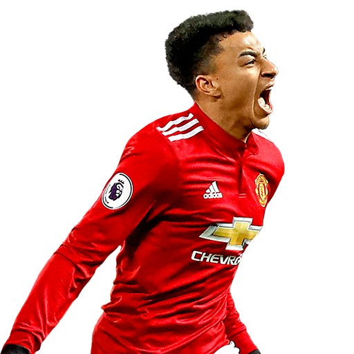

Hello.
I am a Pythoneer and Web Developer. I am currently pursuing my UG at the SRM university.
About Me
Design & Development
I started learning to code when I was 14 years old. Over time, I have gained a wealth of experience designing and coding using Python, C++ and C. I also know a thing or two about HTML and CSS. Also, this is my first web-page🤪😝.

Sports and Fitness
My best skill is actually playing football. I started playing the sport when I was a kid. I'm a big fan of Messi. Forward and Left-Wing are my favourite position. Also, I love to workout and keep myself fit.

Things I Love
I love Japan. It's beautiful and also the safest country. I also love to watching anime. I spend most of my time watching anime during this pandemic. Watering and taking care of my garden keeps me happy.